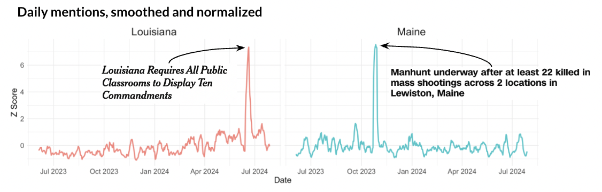
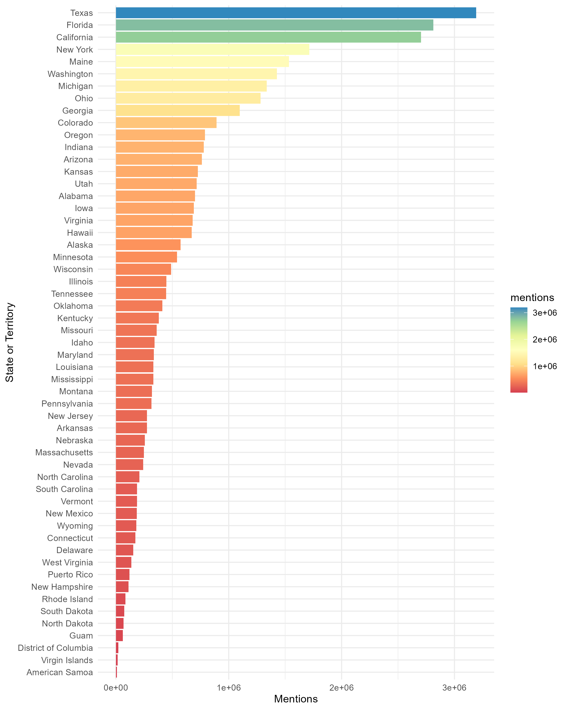
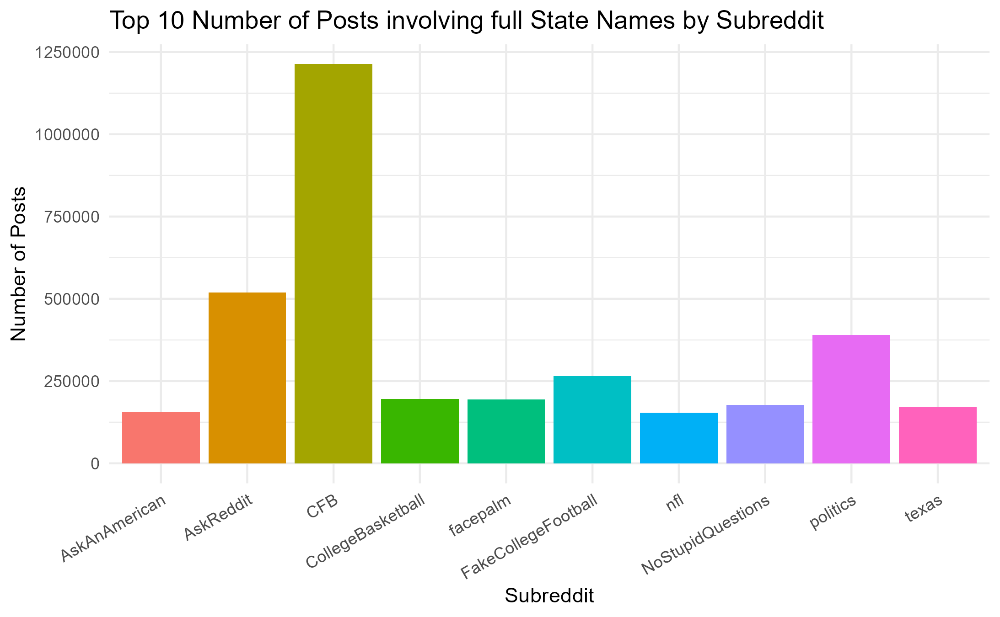

Exploratory Data Analysis (EDA)
In this exploratory data analysis (EDA), we examine various aspects of Reddit discussions related to U.S. states. By analyzing trends over time, identifying popular subreddits and authors, and measuring engagement levels, we gain insights into how frequently and in what contexts different states are mentioned. Visualizations such as line plots, bar charts, and heatmaps help highlight patterns in state mentions, engagement disparities, and subreddit activity. These findings provide a foundational understanding of state-based discussions on Reddit, paving the way for deeper sentiment analysis and further exploration into the factors driving online interest in specific states.
1. State Mentions Over Time
This plot tracks the frequency of state mentions over time, helping us identify trends, seasonal patterns, or spikes in discussion. Peaks in certain months may correlate with state-related events, holidays, or news, offering insights into when and why specific states gain attention on Reddit. A seven-day rolling average is calculated to smooth the curve, and Z-scored trends provide a normalized view.
What did we learn?
- States like Maine, Nevada, and Louisiana exhibit noticeable spikes that align with seasonal events (e.g., tourism peaks, Mardi Gras, or holiday travel).
- Some anomalies in mentions may be driven by significant state-specific news or cultural events, such as major sporting events or natural disasters.
Insights
Peaks in state mentions reflect the dynamic nature of Reddit as a platform for real-time discussions about events and trends.
In this analysis, we observe daily mentions of Louisiana and Maine, smoothed and normalized using Z-scores to highlight significant spikes in public attention. For Louisiana, a sharp peak in mentions occurs in July 2024 coinciding with the mandate requiring public classrooms to display the Ten Commandments. In contrast, Maine experiences a dramatic spike in October 2023 during a manhunt following mass shootings in Lewiston. These trends underscore the strong correlation between major events and public discourse, as captured by daily mention data.

2. Top 10 States by Mentions Over Time
This line plot shows the count of posts mentioning the top 10 most frequently discussed U.S. states over time on Reddit. By focusing on these states, we observe fluctuations in discussion levels and identify their timing.
What did we learn?
- States like California, Texas, and Florida consistently dominate mentions due to their large populations, cultural influence, and relevance in national conversations.
- Smaller states like Hawaii experience spikes likely tied to tourism, particularly during vacation seasons.
Insights
Larger states dominate overall mentions, while smaller states gain temporary prominence tied to tourism or specific events.
3. Top Subreddit in full data mentions
This bar chart is shows which states were talked about the most to the least. In contrast to the other graphs, this data is pulled from a sweep of the entire dataset for when a state was mentioned by name. Thus, the subreddits mentions reflect every time a state was mentioned, and the next two graphs will use the same database to show other facets of this data
What did we learn?
- Of the states, Texas, Florida, and California were mentioned the most by far with the Dakotas being the two least mentioned states
- Territories like American Samoa, Washington DC, and the virgin islands did not come up as much, and, as will be seen later, this led to them having more polarized sentiment scores.
Insights
While this data shows and interesting trend amongst the mentions of states, this data also references cases where the state name may be mentioned in other contexts like in names, sports, songs, or other reasons. This may lead to popular names being over represented.

4. Top Subreddits by Submission Count
This Table chart highlights the top subreddits by submission count. Communities like CFB and CollegeBasketball lead, showing significant relevance to sports-related state discussions.
What did we learn?
- Sports-focused subreddits are key contributors to state mentions, particularly during major sports seasons.
- General-interest subreddits like AskReddit also play a significant role in broader state discussions.
Insights: Sports and general-interest subreddits are pivotal in driving state-related activity on Reddit, making them valuable sources for analysis.

6. State Mentions Relative to Population
By normalizing state mentions against population size, we identify states that are “punching above their weight” in online popularity. The bar chart orders the states by their mentions per 100,000 population of the state. Meanwhile, the scatter plots below show this mention-per-population rank compared against four other rankings:
- State population from the U.S. Census Bureau
- State visit popularity from a YouGov survey
- State overall ranking from U.S. News & World Report
- State nature ranking from U.S. News & World Report
This analysis was conducted using the Subreddit Data.
What did we learn?
- Small states like Wyoming and Alaska dominate mentions per capita, perhaps due to their unique attractions (e.g., Yellowstone, northern lights).
- States with major tourist draws often outperform larger states in per capita mentions. However, when comparing these rankings with external data, we see that these high ranks for small states are more of a function of their low population and less about their perception or natural attractions.
Insights
Per capita metrics potentially highlight states with niche appeal or tourism-based popularity.
7. State Mentions by Subreddit
Mentions of states in state-specific subreddits are examined in the map and heatmap below. In the map, the percent of state mentions that are the name of the state-specific subreddit are shown where darker colors represent state subreddits where state mentions are mostly the subreddit’s state. In the heatmap, we can see both the percent of state mentions of the subreddit’s state but also all of the states mentioned in a state’s subreddit. Darker reds represent state subreddits where state mentions are mostly the subreddit’s state, while darker blues represent lower percents of mentions for non-subreddit states. This analysis was conducted using the Subreddit Data.
What did we learn?
- Nearby states are often mentioned together, reflecting regional proximity or shared cultural ties. For example, Maine and Massachusetts are mentioned a fair amount in New Hampshire’s subreddit.
- States like California, Texas, and Florida have broad relevance and are mentioned across numerous subreddits.
- Some state subreddits are also more insular than others. For example, in California’s subreddit, 84% of state mentions are California, while only 45% of state mentions are New Hampshire in New Hampshire’s subreddit.
Insights
Cross-state mentions suggest correlations with mobility, shared regional issues, or cultural relevance. Perhaps a measure of state self-importance can be gleamed from how much a state is mentioned in its own subreddit.
Analysis Summary
Each visualization provides unique insights into how U.S. states are discussed on Reddit:
- Event-driven activity: Peaks in mentions are often tied to cultural or regional events, underscoring the importance of temporal context.
- Subreddit diversity: A mix of niche and general-interest subreddits contributes to state mentions, reflecting the varied interests of Reddit users.
- Engagement disparities: Larger states dominate engagement, but smaller states excel in normalized metrics, highlighting unique aspects like tourism.
- Cross-state mentions: Regional relationships and mobility trends are evident in subreddit-specific data.
The next steps involve applying sentiment analysis to measure the tone of discussions and exploring how these online perceptions align with real-world data.